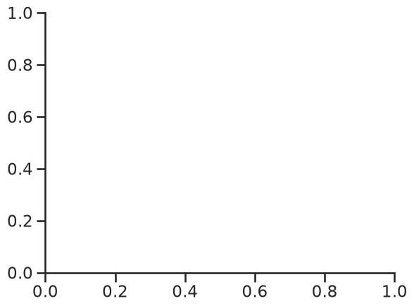
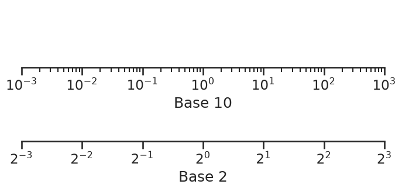
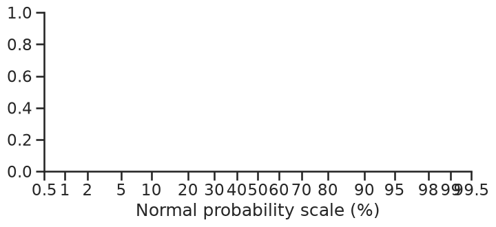
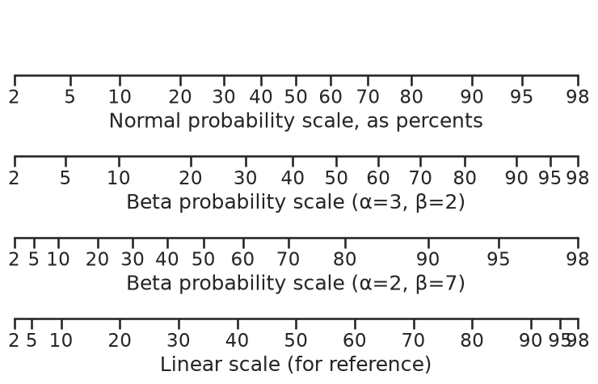
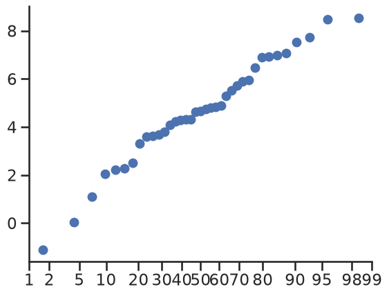
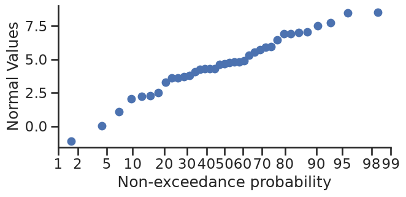
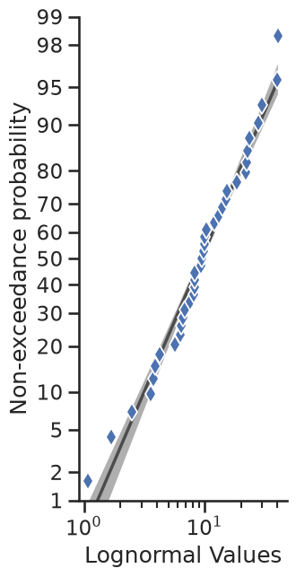
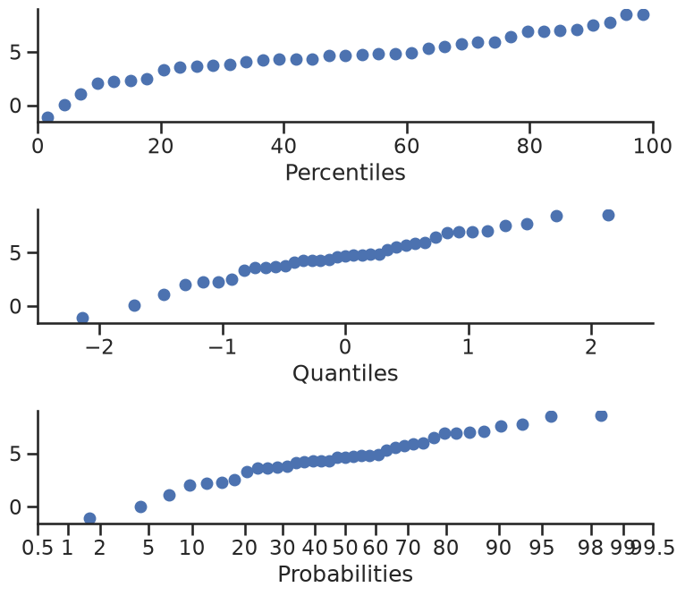
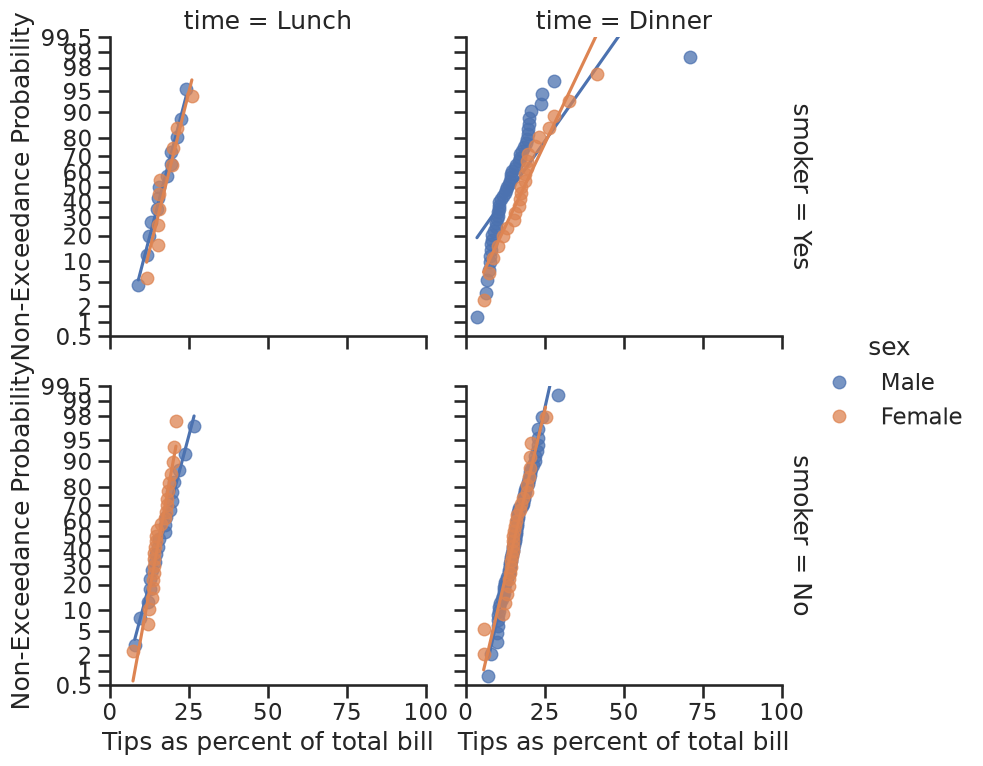

Getting started with mpl-probscale#
Installation#
mpl-probscale supports Python 3.11 and later (the same versions supported by matplotlib).
From conda#
Official releases of mpl-probscale can be found on conda-forge:
conda install --channel=conda-forge mpl-probscale
Fairly recent builds of the development version are available on my channel:
conda install --channel=conda-forge mpl-probscale
From PyPI#
Official source releases are also available on PyPI
pip install probscale
From source#
mpl-probscale is a pure python package. It should be fairly trivial to install from source on any platform. To do that, download or clone from github, unzip the archive if necessary then do:
cd mpl-probscale # or wherever you cloned the repo
pip install .
I recommend pip install . for reasons I don’t fully understand.
%matplotlib inline
import warnings
warnings.simplefilter("ignore")
import numpy
import seaborn
from matplotlib import pyplot
from scipy import stats
clear_bkgd = {"axes.facecolor": "none", "figure.facecolor": "none"}
seaborn.set_theme(style="ticks", context="talk", color_codes=True, rc=clear_bkgd)
Background#
Built-in matplotlib scales#
To the casual user, you can set matplotlib scales to either “linear” or “log” (logarithmic). There are others (e.g., logit, symlog), but I haven’t seen them too much in the wild.
Linear scales are the default:
fig, ax = pyplot.subplots()
seaborn.despine(fig=fig)

Logarithmic scales can work well when your data cover several orders of magnitude and don’t have to be in base 10.
fig, (ax1, ax2) = pyplot.subplots(nrows=2, figsize=(8, 3))
ax1.set_xscale("log")
ax1.set_xlim(left=1e-3, right=1e3)
ax1.set_xlabel("Base 10")
ax1.set_yticks([])
ax2.set_xscale("log", base=2)
ax2.set_xlim(left=2**-3, right=2**3)
ax2.set_xlabel("Base 2")
ax2.set_yticks([])
seaborn.despine(fig=fig, left=True)

Probability Scales#
mpl-probscale lets you use probability scales. All you need to do is import it.
Before importing, there is no probability scale available in matplotlib:
try:
fig, ax = pyplot.subplots()
ax.set_xscale("prob")
except ValueError as e:
pyplot.close(fig)
print(e)
'prob' is not a valid value for scale.
To access probability scales, simply import the probscale module.
import probscale
fig, ax = pyplot.subplots(figsize=(8, 3))
ax.set_xscale("prob")
ax.set_xlim(left=0.5, right=99.5)
ax.set_xlabel("Normal probability scale (%)")
seaborn.despine(fig=fig)

Probability scales default to the standard normal distribution (note that the formatting is a percentage-based probability)
You can even use different probability distributions, though it can be tricky. You have to pass a frozen distribution from either scipy.stats or paramnormal to the dist kwarg in ax.set_[x|y]scale.
Here’s a standard normal scale with two different beta scales and a linear scale for comparison.
fig, (ax1, ax2, ax3, ax4) = pyplot.subplots(figsize=(9, 5), nrows=4)
for ax in [ax1, ax2, ax3, ax4]:
ax.set_xlim(left=2, right=98)
ax.set_yticks([])
ax1.set_xscale("prob")
ax1.set_xlabel("Normal probability scale, as percents")
beta1 = stats.beta(a=3, b=2)
ax2.set_xscale("prob", dist=beta1)
ax2.set_xlabel("Beta probability scale (α=3, β=2)")
beta2 = stats.beta(a=2, b=7)
ax3.set_xscale("prob", dist=beta2)
ax3.set_xlabel("Beta probability scale (α=2, β=7)")
ax4.set_xticks(ax1.get_xticks()[12:-12])
ax4.set_xlabel("Linear scale (for reference)")
seaborn.despine(fig=fig, left=True)

Ready-made probability plots#
mpl-probscale ships with a small viz module that can help you make a probability plot of a sample.
With only the sample data, probscale.probplot will create a figure, compute the plotting position and non-exceedance probabilities, and plot everything:
numpy.random.seed(0)
sample = numpy.random.normal(loc=4, scale=2, size=37)
fig = probscale.probplot(sample)
seaborn.despine(fig=fig)

You should specify the matplotlib axes on which the plot should occur if you want to customize the plot using matplotlib commands directly:
fig, ax = pyplot.subplots(figsize=(7, 3))
probscale.probplot(sample, ax=ax)
ax.set_ylabel("Normal Values")
ax.set_xlabel("Non-exceedance probability")
ax.set_xlim(left=1, right=99)
seaborn.despine(fig=fig)

Lots of other options are directly accessible from the probplot function signature.
fig, ax = pyplot.subplots(figsize=(3, 7))
numpy.random.seed(0)
new_sample = numpy.random.lognormal(mean=2.0, sigma=0.75, size=37)
probscale.probplot(
new_sample,
ax=ax,
probax="y", # flip the plot
datascale="log", # scale of the non-probability axis
bestfit=True, # draw a best-fit line
estimate_ci=True,
datalabel="Lognormal Values", # labels and markers...
problabel="Non-exceedance probability",
scatter_kws=dict(marker="d", zorder=2, mew=1.25, mec="w", markersize=10),
line_kws=dict(color="0.17", linewidth=2.5, zorder=0, alpha=0.75),
)
ax.set_ylim(bottom=1, top=99)
seaborn.despine(fig=fig)

Percentile and Quantile plots#
For convenience, you can do percentile and quantile plots with the same function.
fig, (ax1, ax2, ax3) = pyplot.subplots(nrows=3, figsize=(8, 7))
probscale.probplot(sample, ax=ax1, plottype="pp", problabel="Percentiles")
probscale.probplot(sample, ax=ax2, plottype="qq", problabel="Quantiles")
probscale.probplot(sample, ax=ax3, plottype="prob", problabel="Probabilities")
ax2.set_xlim(left=-2.5, right=2.5)
ax3.set_xlim(left=0.5, right=99.5)
fig.tight_layout()
seaborn.despine(fig=fig)

Working with seaborn FacetGrids#
Good news, everyone. The probplot function generally works as expected with FacetGrids.
plot = (
seaborn.load_dataset("tips")
.assign(pct=lambda df: 100 * df["tip"] / df["total_bill"])
.pipe(
seaborn.FacetGrid,
hue="sex",
col="time",
row="smoker",
margin_titles=True,
aspect=1.0,
height=4,
)
.map(
probscale.probplot,
"pct",
bestfit=True,
scatter_kws=dict(alpha=0.75),
probax="y",
)
.add_legend()
.set_ylabels("Non-Exceedance Probability")
.set_xlabels("Tips as percent of total bill")
.set(ylim=(0.5, 99.5), xlim=(0, 100))
)
